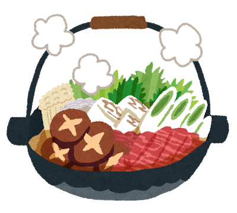

<DOCTYPE html>
<html>
    <head>
        <meta charset="UTF-8">
        <title>Sukiyaki</title>
    </head>
    <body>
        <h1>Sukiyaki</h1>
        
        <h2>説明</h2>
        <p>すき焼きは関東風、関西風、鶏すき焼きに分けられ、食肉や他の食材を浅い鉄鍋で焼いたり煮たりして調理する日本の料理である。</p>
        <h2>材料</h2>
        <ul>
            <li>水</li>
            <li>牛肉</li>
            <li>玉ねぎ</li>
            <li>糸蒟蒻</li>
            <li>にんじん</li>
            <li>えのき</li>
            <li>しいたけ</li>
            <li>卵</li>
        </ul>
        <ol>
            <li>牛肉、野菜（ねぎ・白菜・しらたき・しいたけなど）、豆腐などを切る</li>
            <li>鍋に油をひいて牛肉を焼く</li>
            <li>割り下（醤油・酒・みりん・砂糖）を加える</li>
            <li>肉に軽く火が通ったら、他の具材を順番に入れる</li>
            <li>煮ながら味を染み込ませる</li>
            <li>生卵を溶いて、つけて食べる</li>
        </ol>
        <a href="../index.html">Home</a>
    </body>
</html>